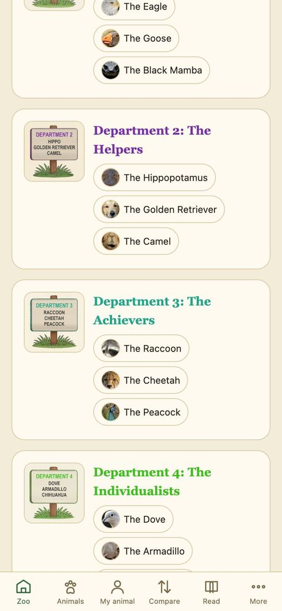
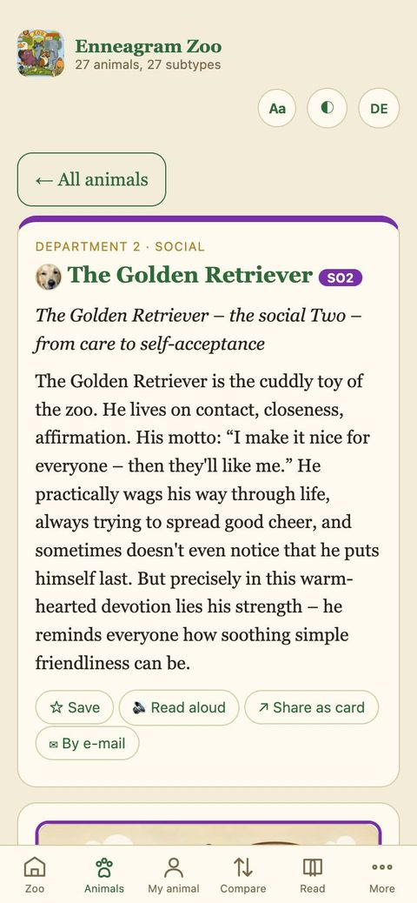
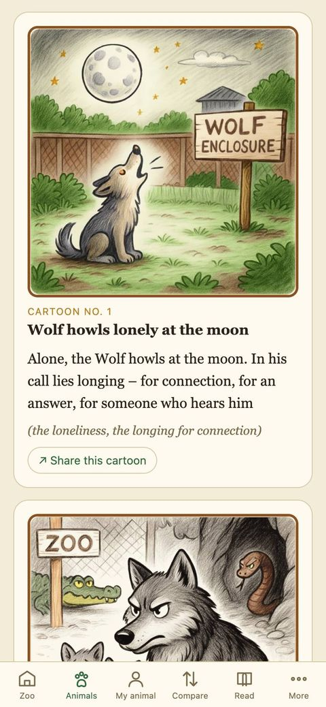
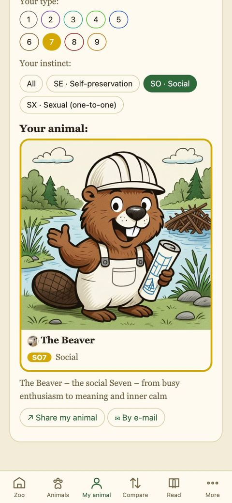
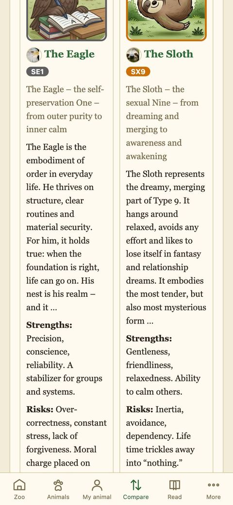
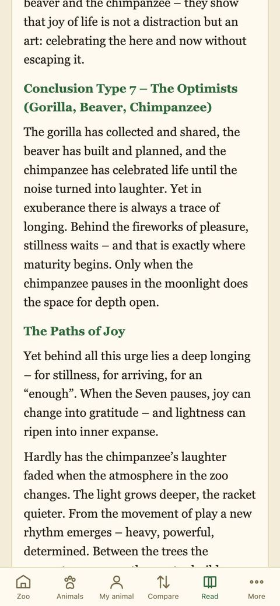

The app for the book
Enneagram Zoo
27 animals, 27 subtypes, a mirror of yourself.
The Enneagram Zoo as an app: nine departments with three animals each, and every animal stands for one of the 27 subtypes. Plus 270 cartoons, black and white in the book and in colour here, with captions and interpretation. With a wink, you recognise yourself and others.
Available now
Open the Enneagram ZooIn German and English. Three animals are partly free so everyone can take a look. The whole zoo is a one-time payment, no subscription: launch price €14.99, later €16.99. You receive access by e-mail.
Read aloud: the animal texts can be listened to in my voice, digitally voiced with my consent. This is not an audiobook. The voice is a bonus with small slips in stress, without any claim to perfection. If you do not like it, simply read the text yourself; the feature is optional.
The film about the app
3 minutes 22: zoo map, departments, animals, cartoons, reading texts, animal test, comparison and sharing.
Music: “Dawns Swinging Revelation” by Detlef Rathmer.
A look inside the app
This is how the app looks on a phone.






What the app offers
Every department stands for an Enneagram type, with its own sign and three animals. Tap a department or an animal.
For each animal: description, strengths, risks and the animal's message, as in the book.
Ten cartoons per animal with caption and interpretation. Black and white in the book, in colour in the app; colours can be switched off.
Don’t know your type? Choose the descriptions from the book that fit you. Or pick type and instinct and see your animal.
Two animals side by side with description, strengths and risks. A random button helps you explore.
Foreword, introduction, the chapters on all nine types with summary, conclusion and paths, and the afterword. With search and a saved list.
Share an animal, cartoon or comparison as a picture card or send it by e-mail. The card is made on your device.
Reading aloud with the device voice, the song for the app, six colour themes and adjustable text size.
Languages
The book behind the app

The author
 Detlef Rathmer
Detlef RathmerNon-fiction author, Enneagram expert, lecturer and coach. A naturopath since 2000, with a focus on classical homeopathy.
Note: The app is meant for orientation and self-reflection with a wink. It is not a diagnosis and no substitute for medical or psychotherapeutic treatment. The animals describe patterns, not people.